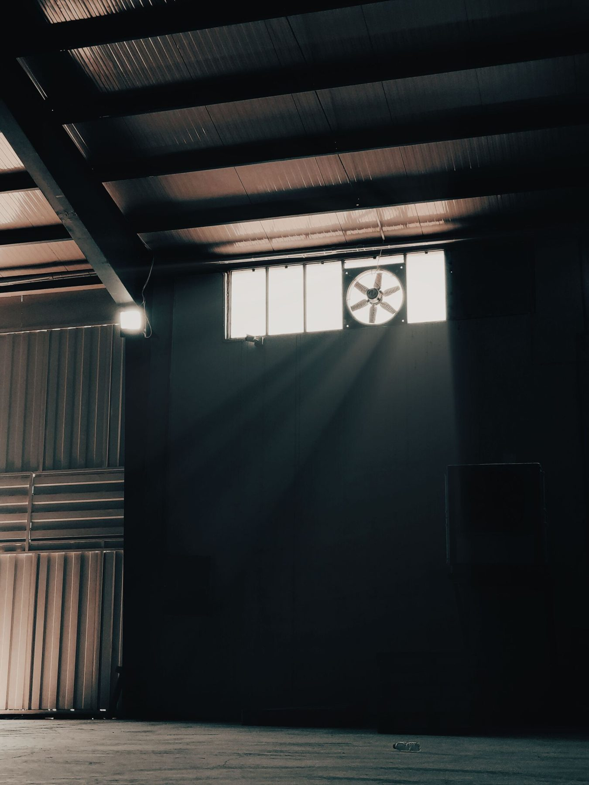

Ambitious about what the company is building, and honest about what that ambition can fairly ask of the people paid to help build it. Roughly 50 up to 2,000 people: past the point where one person can carry every process in their head.
People operations consulting: Zombie processes go on autopilot.
They need some new brainpower.
The parts of a company you only notice once they break. The process that routes a question to the right person instead of a group chat. The paperwork that turns a promotion into a real pay rise, on time, in an afternoon rather than three weeks of email back and forth. The onboarding flow that survives a manager forgetting to show up. We build the operational skeleton so the organisation runs on written processes instead of someone's memory and a shared spreadsheet.

START WITH
The Autopsy
People Operations Audit · From €900
IN SHORT
People operations consulting for companies of 50 to 2,000 people that have outgrown their HR admin. I audit the systems, fix the processes and run them with you, remote-first from Sweden, for teams anywhere. Start with The Autopsy, a people operations audit, from €900.
Robert Stănescu, founder · Updated October 2026WHO THIS IS FOR
Built for the scale-up where informal process has stopped holding.
Multi-country or multi-entity operations, where contract, compliance and query handling complexity multiplies faster than the team supporting it.
A People function that's currently one generalist doing HRBP work, comms and operations all at once, where operations is the piece falling behind.
WHAT GOOD LOOKS LIKE
The systems that hold when nobody is watching.
People operations is the discipline behind contracts, compliance and queries: the parts of the business you only notice in the one week they stop running properly. We build the version that keeps running while you are in another room.
WHY THE MAGIC COFFIN
Here's the problem, and here's the fix.
A process runs because one person remembers every step of it. The moment that person is on holiday, or leaves, the whole system stalls, and everyone downstream finds out how much of the operation was running on memory alone.
A background built for this problem
Systems built at real scale: HRIS automation, a self-service query system and compliance training, for an 800 to 1,300 person, 36 country organisation. Real brainpower, applied to processes that had been running on memory alone.
Someone who understands the people behind the process
A social sciences background (anthropology, sociology, media and communication) means the fix accounts for how people use a system, beyond how it is meant to work on paper.
ENGAGEMENTS
What we can help with
Every engagement starts with a free 30-minute call, where you get a straight answer including an honest read on fit.
Fixed project
start here
The Autopsy
People Operations Audit
From €900
2–3 weeks · ~15–20 hours
Before you fix anything, you need to know what's broken versus what just feels broken. The Autopsy maps every people-ops process you run today: onboarding, offboarding, contract changes, compliance training, employee queries, the lot. We find where a human is manually doing what a system should be doing, where a process only exists in one person's head and where you're one sick day away from something failing unnoticed.
Done looks like: every people-ops process you run today written down in one place, each with a named owner and a named backup, and every process still running on one person's memory listed by name.
WHAT'S INSIDE
- Stakeholder interviews across People, Ops and at least one line manager
- Full inventory of current HR systems (HRIS, ATS, LMS, ticketing or query tools) and how they're used versus how they're meant to be used
- Full lifecycle review: onboarding, offboarding, contract/comp changes, compliance training, employee query handling
- Identification of single points of failure: processes that run on one person's memory alone
- Written findings report (15–25 pages), same direct, plain-spoken standard as the other Autopsies
- Prioritised 30/60/90-day action roadmap
The Autopsy is the natural starting point, and it shows you whether a Reanimation or a Covenant comes next. Consider it an investment that pays for itself.
Book a free consultation →
Fixed project
The Reanimation
HR Systems & Tooling Implementation
From €2,000
4–6 weeks · ~35–45 hours
This is where the machinery gets built. We design and implement the systems that should have existed already: a tiered self-service query system that answers routine questions before they reach a human, HRIS workflows that make a contract or comp change take an afternoon instead of three weeks of email, and compliance training that runs itself instead of chasing people every quarter. You get working systems, configured and handed over.
Done looks like: a tiered query system live, with a measured share of routine questions answered before they reach a human, and that share reported back to you at handover.
WHAT'S INSIDE
Book a free consultation →
- Tiered self-service query system design (a deflection layer people open and use)
- HRIS workflow build and automation (contract changes, comp/salary review cycles, role changes)
- Compliance and mandatory training programme setup in your LMS, if you need one running
- System configuration documentation, so the setup survives you changing HR tools later
- Integration and workflow testing before go-live
- Full handover session + 90-minute admin training
Fixed project
The Covenant
Onboarding, Offboarding & Policy Design
From €1,400
4–5 weeks · ~25–30 hours
Systems only work if the people using them know what they're supposed to do. The Covenant is the human-facing half of People Ops: the onboarding and offboarding journeys, the policy documentation, the process playbook that tells your team what to do and when, with the answer written down before anyone has to ask you.
Done looks like: your onboarding and offboarding running to a written sequence with named owners and stated turnaround times, followed by a manager working from the guide alone.
WHAT'S INSIDE
Book a free consultation →
- Onboarding and offboarding journey design: touchpoints, owners, timing
- Policy documentation and handbook design or update
- Process playbook: written, practical, branded, ready to use on a Monday morning
- SLA definitions for people-ops requests: turnaround expectations, escalation paths
- Manager-facing process guide
- Handover session + team training
Monthly retainer
The Resurrection
Fractional People Ops Partner
From €900 a month
Minimum three-month commitment · ~14–20 hrs/mo
People Ops is upkeep. The Resurrection keeps the systems running monthly: processing contract and comp changes, maintaining and updating policies, handling onboarding and offboarding admin, keeping the HRIS configuration current as you grow.
Done looks like, every month: contract and comp changes processed inside the turnaround we agree, policies current and a report showing what moved, what is outstanding and what needs a decision from you.
WHAT'S INSIDE
- Monthly ops review with your People or Ops lead
- Contract and comp/addendum change processing (via HiBob or your HRIS)
- Onboarding and offboarding administration
- Policy and process documentation maintenance
- Employee query support and triage
- Monthly ops report: what moved, what's outstanding, what needs a decision from you
The three-month minimum is a commitment to your results: operational infrastructure takes longer than four weeks to settle.
Book a free consultation →THE WORK
Work in this area
Real work from in-house roles, sample deliverables and playbooks, each labelled for what it is.

CASEPeople Operations
A self-service tier for employee questions
Tier 0 of a tiered query system across Legal, IT and People, with self-service answers first.
Company-wide, 36 countries

CASEPeople Operations
Mandatory training across 36 countries
Recurring phishing, data protection, KYC and GDPR training, tracked to completion.
36countries, one learning platform

CASEPeople Operations
An org chart that updates itself
Every joiner, mover and leaver on the intranet, straight from the HRIS.
Company-wide
FAQ
Frequently asked questions
Got a different question? That's what the free consultation is for.
Do you recommend specific HRIS/ATS vendors, or is this vendor-agnostic?
−Vendor-agnostic by default.
The Autopsy assesses what you have and what you need. The Reanimation recommends new tooling only where the gap survives better configuration or better use of what's already in place.
What if our processes are undocumented, how do you audit something that only exists in someone's head?
−That's what the Autopsy is built to surface.
We interview the people who run the process day to day and cross-check against what the systems show, to rebuild what's happening versus what's supposed to be happening.
Does this cover payroll, or is that out of scope?
−Out of scope for the core Autopsy and Reanimation deliverables.
Payroll accuracy and processing sit with your payroll provider or accountant.
Where a people-ops process feeds payroll (comp changes, contract updates), that handoff is covered. Running payroll itself stays with your provider.
Can this run in parallel with an active compliance review?
−Yes, and it often should.
An external compliance review is the kind of pressure that exposes undocumented single points of failure.
Flag it on the discovery call, so the engagement can be sequenced around it.
What's an HRIS, in plain terms?
−The system that should handle a contract change, a comp update, a role change or a compliance training reminder in a couple of clicks, rather than three weeks of email back and forth.
Where yours falls short of that, closing the gap is the Reanimation's job.
Is People Operations the same as HR?
−People Operations builds and runs the systems and paperwork: onboarding flows, HRIS workflows, policy documentation. It's the operational half of HR.
Fractional HRBP, a separate pillar, brings judgement to the sensitive, infrequent calls: a restructure, a difficult exit, a comp decision that sets precedent.
Job levels, pay bands and the EU pay transparency rules sit with Pay Transparency, a focused slice of the same work.
Many companies need more than one, at different moments.
LATEST THINKING
From the blog

PEOPLE OPERATIONS & AI09 Sep 2026
Who Signs Off When the Algorithm Sets the Pay?
241,000 drivers challenge Uber's pay algorithm under GDPR.

PEOPLE OPERATIONS & AI04 Sep 2026
Two-thirds of Dutch workers do not remove sensitive data before pasting it into an AI tool
5.2 million people in the Netherlands now use AI at work, and only 29% have had any training.
PEOPLE OPERATIONS & AI01 Sep 2026
Half of Europe now uses AI at work. The economy got 3.8% better.
The ECB measured the AI dividend. It is smaller than promised.
Not sure where to start?
Lift the lid first.
Book a free 30-minute consultation. We'll identify your biggest vampire moment and tell you honestly whether we're the right fit to bury it.
LID OFF